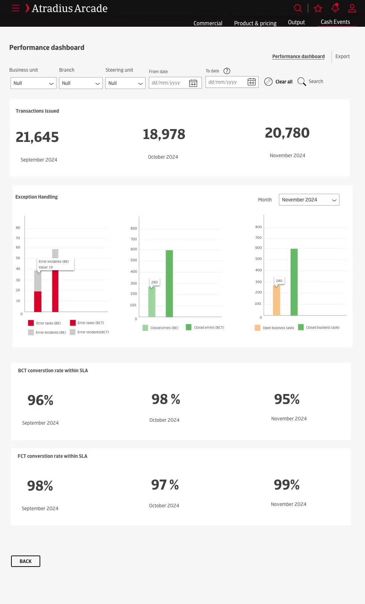
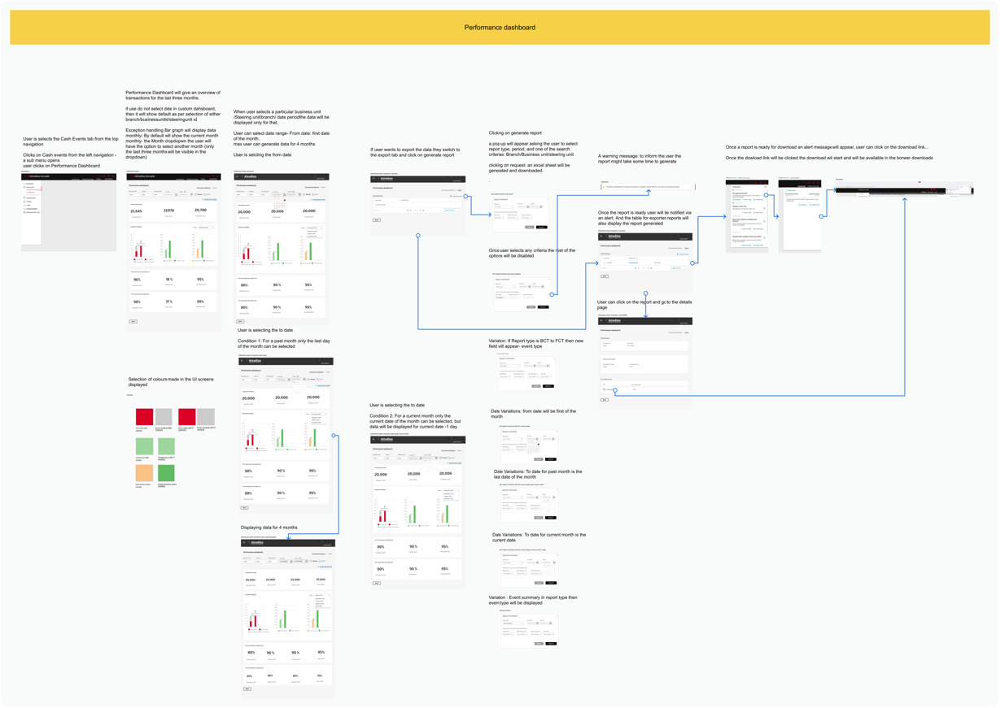
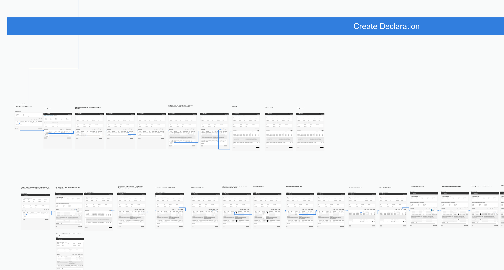

Atradius
Atradius is a global provider of credit insurance, surety, and debt collection services, helping businesses manage trade risk and grow with confidence. With a presence in over 50 countries, Atradius supports companies of all sizes with tools to protect receivables and make informed credit decisions in an ever-changing market.

Project overview
Atradius embarked on a strategic transformation initiative to modernize its legacy credit insurance platform — internally known as the "Symphony Application" — which had become outdated, complex, and difficult to maintain. The redesign, part of the broader Arcade program, aimed to deliver a next-generation digital solution that would enhance user experience, streamline business processes, and support long-term technological scalability.
The project applied the Coexistence Principle: legacy systems continued running in parallel with the new platform through the transition, minimizing disruption while paving the way for incremental improvement. I led design on this engagement, mentoring a junior designer alongside me for the duration of the project.
Problem statement
Atradius was operating on an outdated legacy system — Symphony — that was difficult to maintain, unintuitive for users, and unable to scale with the evolving needs of the business. Outdated workflows led to inefficient processes, user frustration, and high support overhead. The legacy infrastructure also limited the company's ability to innovate and respond quickly to market demands.
There was a pressing need to:
- Simplify and automate complex workflows.
- Improve usability and user guidance.
- Transition to a more modern, scalable IT architecture.
- Strengthen customer value through improved service accessibility and experience.
System Architecture & Technical Constraints
Three constraints outside the interface shaped almost every harder decision in this project — more than any visual-design preference did.
One interface, fifty regulatory regimes. Atradius writes credit insurance in more than 50 countries, and that shows up in the product, not just the sales deck. The same declaration screen has to calculate GST in Australia and a different tax treatment in the EU; the same manual event form has to support region-specific tax suppression rules, per-country premium and CL fee structures, and business units like "Portugal Local" that carry their own language, currency and broker relationships. None of that can be hidden behind a single generic form the way a domestic product could get away with. The configurable-column declaration table, the region and tax-suppression fields on manual events, and the currency-aware summary screens later in this case study are all direct answers to that constraint, not generic best practice.
Tax calculations that can't run instantly. A manual event can carry 70+ charge lines, each potentially in a different regulatory regime — calculating tax across that takes real time, sometimes long enough that a spinner reads as broken rather than busy. Rather than block the screen or hide the wait entirely, I designed toward a third option: calculate silently below a line-count threshold, surface an explicit warning and a real choice above it, and send a mobile alert the moment the result is ready. Experience 4 — Manual Events, further down, walks through this in full.
Migrating without a hard cutover. The legacy Symphony platform and the new Arcade platform had to run in parallel through the transition — the Coexistence Principle — rather than a big-bang switch. That ruled out any redesign that assumed a clean slate; every screen had to make sense to someone who might still be working in the old system the same week.
Design process
Discovery
To ensure the redesigned platform aligned with the real needs of its end users, I developed key user personas grounded in stakeholder interviews — including Mike, an Account Manager, and Daphne, a Customer Credit Manager. These personas helped the team empathize with users' daily challenges, prioritize features, and design workflows that genuinely supported their goals, rather than just digitizing the old ones.
After synthesizing insights from stakeholder interviews, user observations, and workflow analysis, I moved into the definition phase — translating findings into a strategic foundation for the rest of the design process.


User Journey Mapping & Opportunity Identification
I mapped storyline-format journeys for the core personas — Mike and Daphne — visualizing the end-to-end experience across credit limit decisions, declarations, and offer comparisons, each broken into timed phases with the underlying screen at every step. Mapping each touchpoint let me:
- Pinpoint moments of friction, such as redundant data entry or unclear navigation.
- Identify delays caused by manual processes or system dependencies.
- Recognize emotional pain points, like frustration from slow data retrieval or limited visibility into account status.
That mapping surfaced clear opportunities for simplification:
- Streamlining multi-step workflows into guided, linear processes.
- Reducing toggling between multiple legacy interfaces.
- Consolidating key information on dashboards and summary screens.
- Automating repetitive tasks such as data population and risk validation.
These opportunities directly informed the early wireframes.

Mike (Account Manager) — requesting a Credit Limit Application on a 3rd-country risk, from log-in through to sending the customer the amended policy package.

Daphne (Customer Credit Manager) — a Credit Limit Application for a country already in the same risk class as the existing cover, referred for assessment before confirmation.
Four of the ~15 storyline-format journeys mapped across personas — including Martina (Finance Director) and Damian (Broker) on the customer side — each broken into timed phases to expose where minutes, and patience, were being lost. The last two were built from the underlying Declaration and Compare Offers UI flows to fill gaps the first pass of journeys didn't cover.
Expert Evaluation
Alongside the generative research, a heuristic pass on the existing Symphony application surfaced several structural issues. The application is data-heavy, but screen space wasn't being used effectively due to a low target resolution. While the interface aimed to align with company branding, the style guide had real discrepancies — red tertiary buttons, for instance, could easily be misread as error states. Visual hierarchy was thin overall, leaving the interface feeling flat.

The legacy Symphony system — built on Oracle Forms — that the redesign is replacing screen by screen.
Two takeaways guided the redesign directly:
- Navigation needed a clear structure so users could find their way around without guesswork.
- Data on screen needed to be actionable, not just present — information users could immediately act on, not just read.
Defining Success Metrics
Establishing meaningful success metrics was critical to ensuring the redesigned platform delivered measurable value, not just a fresh coat of paint. I approached it in three steps.
1. Stakeholder Alignment Workshops
I organized and ran workshops with cross-functional stakeholders — Product Managers, Business Analysts, UX Researchers, IT Leads, and Customer Support Managers — exploring business priorities for the Arcade platform, known pain points from internal and external users, operational KPIs already in use, and opportunities to introduce UX-specific measures like satisfaction and efficiency. This aligned the group on what "success" meant from both a strategic and a practical, day-to-day perspective.
2. Mapping User Goals to Business Objectives
I used persona insights — Mike's need for faster client servicing, Daphne's need for better data access — to map individual user goals to high-level business outcomes:
3. Identifying Observable Indicators
Once goals were aligned, I worked with data and IT teams to identify observable, trackable indicators already available in the system:
- Time-on-task, measured via system logs.
- Support ticket volume, tracked pre- and post-launch.
- Adoption rate, measured via login frequency and feature usage.
How might we?
Moving into the design and validation phase, the focus shifted to migrating legacy functionality while addressing pain points across roles — admins, brokers, underwriters — across critical workflows like offer creation through invoicing. I framed key design opportunities as "How Might We" questions to keep the group anchored on outcomes, not just features.
"Better customer experience, better control and transparency of data — the system should deliver accurate output in multiple formats depending on customer preference."
Continuous Feedback Loop
To keep these questions honest, the process stayed iterative throughout:
- Regular review sessions with subject matter experts (SMEs) to evaluate user stories.
- Design hypotheses validated through early and frequent low- and high-fidelity prototypes.
- Customer demo sessions to test baseline designs and gather actionable feedback.
- Real-time input used to refine user flows, sharpen clarity, and stay aligned with business needs.
Focus Areas
Research consistently surfaced the same three needs, in different words, across personas and workshops. Three pillars organized the design work going forward:
The same principle extended to actionability and notifications: surfacing what a user should do next when a dashboard sat empty, and flagging meaningful account activity — a policy update, a new offer requiring review — so nothing important got missed.
Wireframes & Prototyping
Experience 1 — Compare Policies & Offers
The "Compare Policies & Offers (Complex)" feature streamlines decision-making in MSA and renewal processes by letting users compare multiple policies, multiple offers, or a single policy against related offers. It supports advanced filtering and customizable comparisons across modules, variables, document groups, and bank accounts, with both on-screen and Excel export options. Users choose a source offer, pick target offers to compare against, and toggle between "View differences," "View similarities," or "View all" to cut through the noise. The tool only surfaces currently effective or non-end-dated records, keeping comparisons accurate for complex commercial case evaluations.

Starting point — the Compare Offers action in the case overflow menu

Toggle between View differences, View similarities, or View all

Bank accounts compared across source and target offers
Experience 2 — Performance & Portfolio Dashboards
As part of a data-driven reporting solution, I designed a set of dashboards giving account managers and operations teams a real-time view of both policy performance and operational health. At the policy level, turnover, premium and APR estimates sit alongside credit limit indications, credit limit applications, claims & collections, and cash transaction balances — all on one screen, replacing what used to be a multi-system lookup. At the operational level, a separate Performance dashboard under Cash Events rolls up monthly transactions issued, exception handling (error tasks and incidents split by BE/BCT, open vs. closed business tasks), and BCT/FCT conversion rates within SLA — filterable by business unit, branch, steering unit and date range — so operations can see the health of the conversion pipeline month over month rather than policy by policy (see the hero screen above). Reports out of that dashboard aren't just viewed live, either — operations teams need to pull point-in-time exports (audit trails, tax summaries, event summaries, exceptions, BCT/FCT and FCT/FIS conversion detail) for downstream use. The Export tab treats that as a proper background job rather than a blocking download: pick a report type (each with its own conditional fields — an Event type selector only appears for an Event summary report), scope it to one of branch, business unit or steering unit — picking one disables the other two — and the system generates the file asynchronously, alerts the user once it's ready, and keeps a running table of everything that's been exported.
Once screens were designed and user journeys updated, I built detailed UI flows and interactive prototypes so stakeholders could clearly understand each feature — including multiple scenarios and contextual explanations. These assets were central to a smooth handoff, giving development, services, and testing teams comprehensive documentation to work from.

The underlying UI flow for the Performance dashboard — date-range validation rules and the full export/report-generation branch, mapped in the same format as the Create Declaration flow below. Click to open it full-size.
Experience 3 — Declarations & Invoicing
Declarations sit at the center of the policy lifecycle — customers report turnover by country, buyer and trade sector, and the system calculates premium against it. The redesigned declaration table lets users configure which columns matter to them (buyer organisation, trade sector, region), expand any row for special or customer-reference notes, and switch into an "Edit details" mode for bulk changes — replacing a rigid, one-size-fits-all legacy grid. A dedicated Cash Transactions tab rolls declarations, premium & other fees, and CL fees into running balances, so an account manager can see what's unpaid, issued, or pending without leaving the policy.

Starting from Cash Transactions — declarations, premium and CL fee balances, with Create Additional Declaration one click away
The carousel above is a curated walk-through — the actual flow behind it branches considerably further: column-level validation (a disabled region field outside Canada/Australia, an error when a buyer-level premium rate doesn't match the country level), an autocomplete buyer-organisation picker, an auto-populated trade sector, and a save-time validation that blocks submission if a required region was never entered. I mapped the full thing before narrowing down to the screens worth showing individually.

The underlying UI flow for Create Declaration — every branch and validation state mapped before any screen got built. Click to open it full-size — it's dense, and worth reading at scale.
Experience 4 — Manual Events
Not every charge fits the standard declaration flow — bonuses, surcharges, no-claim adjustments and CL fees often need a manual event: a bulk list of charge lines, each with its own line type, region, unit price and tax-suppression setting, frequently running to 70+ lines on a single policy. This is the feature I'll walk through in the most depth, because the interesting design problem in it — an async calculation with a real, visible wait — isn't one that gets solved by making the form prettier.
The problem: a slow calculation with no good default
Tax calculation across dozens of lines, each potentially in a different regulatory regime, takes real time — sometimes long enough that a spinner reads as broken rather than busy. Three broad options existed. Block the screen until the calculation finishes: simple, but for a 70-line event that could mean a frozen UI for minutes, with no way to tell whether it's working or hung. Run it silently in the background with no acknowledgment: keeps the user unblocked, but they'd have no idea the event was still processing, and no clear moment to come back to it. Or make the wait itself a decision: tell the user up front that this will take a while, and let them choose between waiting for a live preview or submitting without one — with a notification when the result is ready either way.
I designed toward the third option. Below a line-count threshold, the system just calculates and shows the summary — no extra step. Past that threshold, a warning surfaces before submission and hands the user a real choice, and if they walk away, a mobile alert tells them the moment the tax summary is ready to review, commission impact included.

Create Manual Event — event type, start and end date

Charge and export amounts filled across multiple lines

The wait warning — preview calculated tax, or submit without preview

Tax summary with GST breakdown and broker commission impact

Mobile alert confirming the tax summary has finished calculating
What the demo actually surfaced
The same principle the heuristic evaluation surfaced early on — data needed to be actionable, not just present — applied directly here: the manual event line list groups by what a user actually needs to check at a glance (line type, region, unit price, tax suppression, computed amount), keeps totals pinned at the bottom of the page instead of buried in the data, and separates "editing" from "reviewing" as distinct modes rather than one perpetually-editable table. I ran this flow past country reps and SMEs as part of a dedicated Premium Adjustment demo, with a structured feedback survey alongside it. The feedback was specific and mostly about honesty in the interface rather than aesthetics: a missing "Reject" option alongside submit, a "Submit" button whose label didn't match what it actually did — it previewed, it didn't commit — which I relabeled to "Preview" as a direct result, commission impact missing from that preview entirely, and a request that claim ratios always render to two decimal places so small rounding differences don't turn into disputes later. One thread went past the interface: whether bonus calculations, handled manually by account managers in France today, should keep routing through that manual review step even once the rest of the flow is automated — a process question I fed back to the product team rather than resolving unilaterally in the design.
3.6 usability · 3.7 functionality
Plotted against the same usability/functionality decision framework used across the program's demo evaluations, this session landed in the Continue zone rather than the ambiguous middle — comfortably clear of "fix it" or "rebuild," which is why the fixes that came out of it (the button rename, the missing Reject option, commission impact on the preview) were treated as refinements to ship, not reasons to redesign the flow.
Usability Testing
Beyond the Manual Events deep dive above, I ran the same demo-plus-survey pattern across the other Arcade features — multiple sessions with subject matter experts (SMEs) and product owners, each backed by interactive prototypes so stakeholders could experience real flows and behaviors rather than judge static screens. The structured feedback survey behind each demo covered eight dimensions: clarity of the flow, efficiency gains, screen readability, availability of essential information, functional adequacy, regulatory fit, and expected impact on response time and service quality. Combining real-time interaction with targeted feedback gave a consistent, comparable read across features on how well each design matched user needs — and, as with Manual Events, directly informed the next round of iteration.
Next steps
As the project continues, the focus is on optimizing the design process itself to deliver a more cohesive, user-centric product:
- Style Guide Enhancements — proposing improvements to consistency, accessibility, and scalability. Since the guide has been in use since the standard release, this included a thorough impact analysis to ensure changes land without disrupting established workflows.
- Expanded Usability Testing — extending testing to cover additional features, surfacing further pain points and supporting continued iterative improvement.
- Complexity Analysis for Workflow Optimization — applying the same complexity-scoring method used on PowerVC to identify friction and over-engineering in the Atradius journey, guiding where simplification will have the most impact.